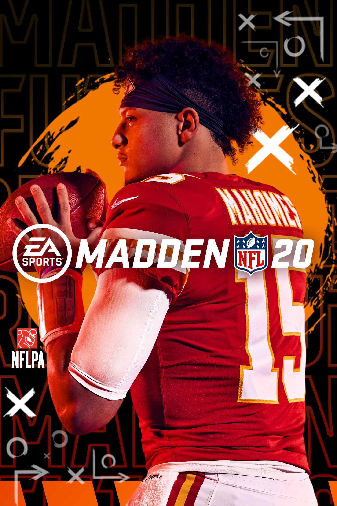
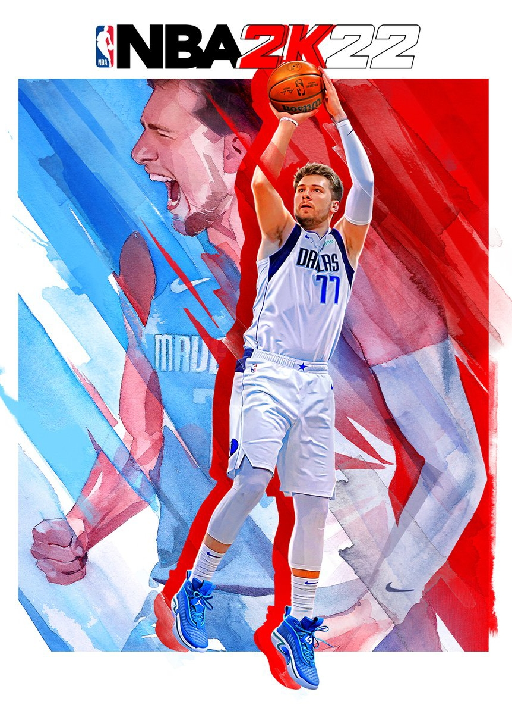
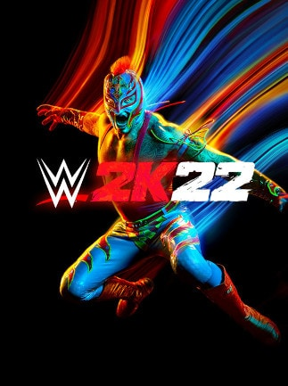
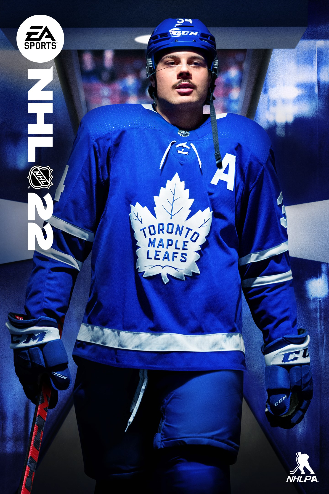
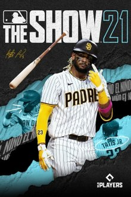
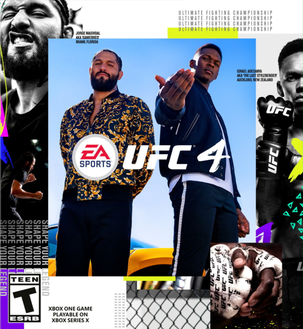
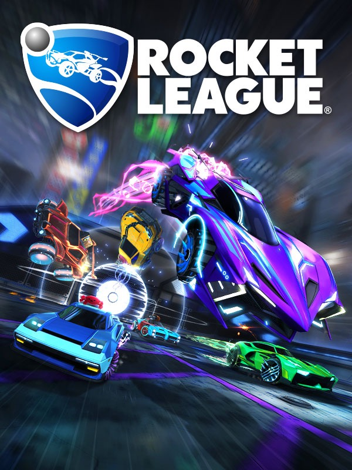
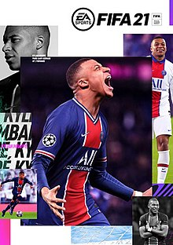
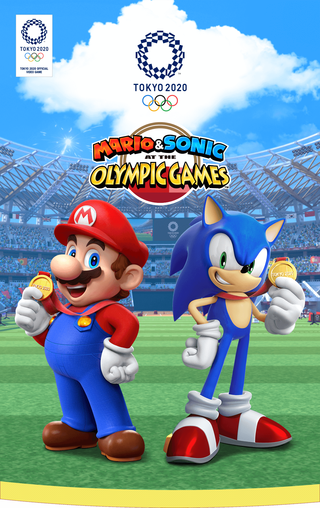
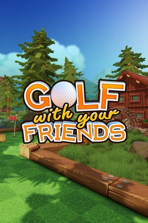

Knockout City (2021) IMBd Rating: 6.5/10 ING Rating: 9/10 A fun action packed multi-player online dodgeball game where you team up and settle the score with epic dodgeball battles. At the end of the day the winner gets the crown and the loser looks like a clown. PLATFORMS:
PlayStation 4, PlayStation 5, Nintendo Switch, Xbox One, Xbox series X and Series S, and Microsoft Windows

Madden 20 (2020) IMDb Rating: 4.9/10 ING Rating: 8.1/10 A American football game based on the National Football League. Achieve gridiron greatness while having more fun playing with or against friends. Take your team from pre-season to the Super Bowl, and be at the very center of everyday to victory. PLATFORMS: PlayStaion 4, Xbox One, and Microsoft Windows

NBA 2K 22 (2017) IMBd Rating: 6.5/10 ING Rating: 7/10 A basketball simulation game that puts you on the court of the entire basketball universe. Play in real NBA and WNBA environments against authentic teams and players. PLATFORMS: PlayStation 4, Xbox One, Xbox series X and series S, Nintendo Switch, Microsoft Windows, and Macintosh operating systems

WWE 2k22 (2022) IMBd Rating: 7.9/10 ING Rating: 8/10 A professional wrestling game based on the entertainment show WWE. PLATFORMS: PlayStation 4, PlayStation5, Xbox One, Xbox series X and series S, and Microsoft Windows
Tony Hawk's Pro Skater 1+2 (2020) IMBd Rating: 8.8/10 ING Rating: 9/10 The video game that transformed the world of skateboarding is back! With totally remastered versions of the first two games is set to bring back original levels, pro skaters, tricks, modes, and songs from the iconic soundtrack. PLATFORMS: PlayStation 4, PlasyStation5, Xbox One, Xbox series X and series S, Nintendo Switch, and Microsoft Windows

NHL 22 (2021) IMBd Rating: N/A ING Rating: 6/10 Giving you more ways to play and compete than ever before, this game is authentic to real player skill and style. The stars of NHL come to life making their time on the ice more influential then ever. PLATFORMS: PlayStation 4, PlayStation 5, Xbox One, and Xbox series X and series S

MLB 21 (2021) IMBd Rating: 7.7/10 ING Rating: 8/10 OWN THE SHOW! Based on the national baseball league, experience faster, deeper and more intense moment-to-moment match action on the field, with a variety of game modes for all you rookie players and returning seasoned vets. PLATFORMS: PlayStation 4, PlayStation 5, Xbox One, and Xbox series X and series S

UFC 4 (2020) IMBd Rating: 5.5/10 ING Rating: 8/10 Based on the mixed martial arts promotion Ultimate Fighting Championship, the fighter you become is shaped by your fighting style, your achievements, your personality. All your fights will now feel more authentic with fluid clinch-to-strike combinations that offer more responsive stand-up gameplay. PLATFORMS: PlayStation 4 and Xbox One

Rocket League (2015) IMBd Rating: 7.8/10 ING Rating: 8/10 A physics-based online soccer-style game where players can engage in hyper-powered, arena-based, futuristic vehical that will test your driving and stunting skils like never before. PLATFORMS: PlayStation 4, Xbox One, Nintendo Switch, Microsoft Windows, and Macintosh operating systems

FIFA 21 (2020) IMBd Rating: 4.7/10 ING Rating: N/A Has more ways to play than ever before which includes over 100 icon players, career mode, even the UEFA Champions League and CONEMBOL Libertadores. PLATFORMS: PlayStation 4, PlayStation 5, Nintendo Switch, Xbox One, Xbox series X and series S, Microsoft Windows, and Google Stadia

Mario and Sonic at the Olympic Games: Tokyo 2020 (2019) IMBd Rating: 6.6/10 ING Rating: 6.4/10 Join Mario, Sonic and friends or their greatest adventure yet as they compete for the gold in the Olympic Games Tokyo 2020! Compete in action-packed sports games, including four brand new events. PLATFORMS: Nintendo Switch, Arcade Game, and Arcade Video Game

Gold with you Friends (2016) IMBd Rating: 6.4/10 ING Rating: N/A A casual multiplayer game that can be played up to 12 players online. Players can create servers to include other people or practice by themselves offline. The world follows different themes, such as green forest, sandy oasis, and haunted mansion. However, the main differences in gameplay come from varying obstacles and challenges along the way. There are currently two game modes, classic and custom. PLATFORMS: PlayStation 4, Xbox One, Nintendo Switch, Microsoft Windows, and Google Stadia